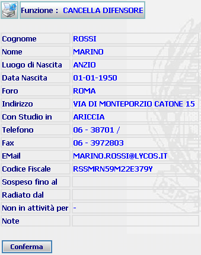
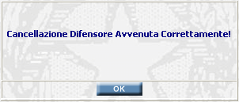

GENERALITA'
CANCELLA DIFENSORE: La funzione, consente di eliminare i dati di un difensore, introdotti precedentemente con la funzione inserimento difensore.
LE MASCHERE VIDEO
La funzione in esame viene realizzata attraverso l'utilizzo della seguente maschera che riporta gli elementi descrittivi del difensore:

COME FARE PER ...
Per eliminare i dati di
un difensore
l'utente deve confermare l'operazione di
cancellazione agendo sul bottone
 . A fronte di questa
operazione
il sistema visualizzerà il seguente messaggio:
. A fronte di questa
operazione
il sistema visualizzerà il seguente messaggio:

Agendo sul pulsante
 il sistema visualizzerà la maschera di:
il sistema visualizzerà la maschera di:
|
Ricerca Difensore se la cancellazione è avvenuta dalla maschera di Dettaglio difensore; | |
|
Elenco avvocati se la cancellazione è avvenuta da quella maschera. |
CAMPI
Nella maschera non sono presenti campi digitabili.
PULSANTI
Oltre ai
pulsanti orizzontali dell'area
di navigazione, è presente
il pulsante
 di stampa del contesto (videata)
di stampa del contesto (videata)
BOTTONI
Oltre ai comandi funzionali relativi al menù verticale sono presenti i seguenti comandi:
|
COMANDI |
DESCRIZIONE |
|
|
A fronte di tale comando, il sistema provvederà ad eliminare i dati del difensore. |
|
|
A fronte di tale comando, il sistema visualizzerà la maschera di Ricerca Difensore se la cancellazione è avvenuta dalla maschera di Dettaglio difensore ed Elenco avvocati se la cancellazione è avvenuta da quella maschera. |
CONTROLLI
Nel caso che il sistema trovi più di utente rispondente ai criteri di ricerca impostati verrà visualizzato il seguente messaggio:
In tal caso l'utente dovrà effettuare la cancellazione, come indicato dal messaggio, attraverso la funzione di ricerca difensore che permetterà all'utente di visualizzare l'elenco degli avvocati e quindi attraverso il pulsante
, presente nella lista, effettuare la relativa cancellazione attraverso la maschera di Cancella Difensore
N.B. l'operazione di cancellazione è possibile solo se l'avvocato è stato inserito da un utente dell'ufficio corrente.